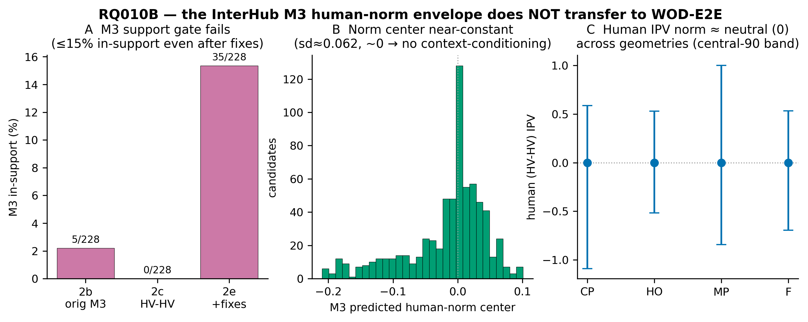
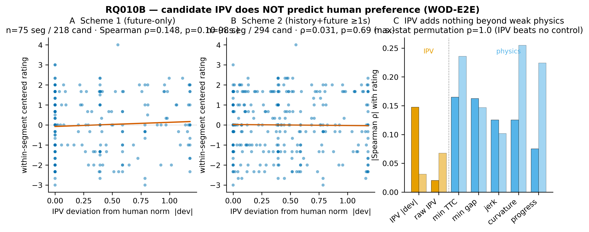
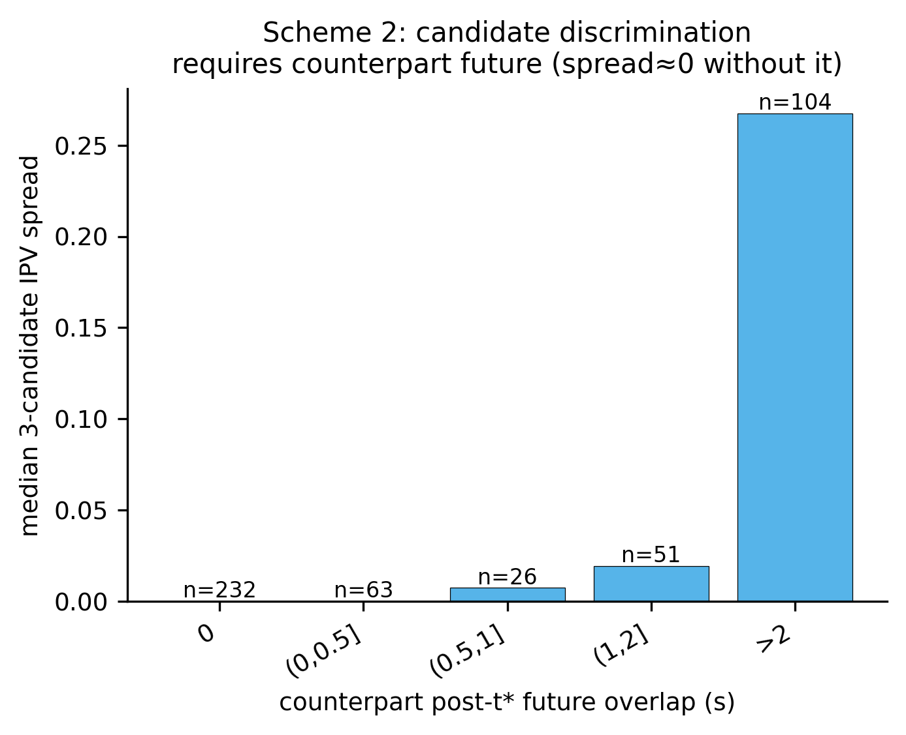

Waymo Open Dataset — End-to-End (WOD-E2E) · Reframed pre-registered analysis · Run RQ010B_1_tracking_preference_20260625T201647+0800_695fa83f · 2026-07-03 · Status: COMPLETE (bounded null)
Reframed goal (PI): can ego IPV serve as a single, interpretable variable that explains human judgement of driving, needing only to be comparable to physical features (not superior)? Each rated WOD-E2E scene has one decision frame t* with 3 candidate 5 s future trajectories, each scored 0–10 by human raters. Unit = candidate; group = segment (3 candidates/segment). Ratings were sealed until the final within-segment test.
WOD-E2E gives 8-camera imagery only — no LiDAR, no actor tracks, no HD map. Per rated segment (ego-centric frame at t*): ego past_states (16, ~4 s) + future_states (20, actual driven) at ~4 Hz; three candidate futures (21 xy points, position-only) + one preference_score each; 5 forward cameras @ 10 Hz. The surrounding (counterpart) vehicle trajectory is not provided — it was recovered by a purpose-built camera-only 3D detector + multi-frame tracker (StreamPETR fine-tuned on Waymo; forward-arc; ~1.2 m position error).
The pre-registered plan intended to score each candidate's IPV against the frozen RQ009 M3 context-conditioned human-norm envelope. M3 loads and reproduces exactly on its own data, but does not transfer to WOD-E2E: its support gate keys on categorical context (geometry × right-of-way × agent-type) that WOD-E2E cannot supply (no right-of-way label; AV-vs-traffic only). Even after the conceptually-correct pure-HV-HV encoding (categorical support 684/684) and fixing all construction artifacts, the numeric kinematic distribution stays out-of-distribution (≤ 15 % in-support) and the predicted norm center is near-constant (Fig. 2). Replacement human norm = the path-type-conditioned pure-HV IPV distribution: center ≈ neutral (0) across all geometries, spread varies. Deviation = |candidate IPV| normalized by the human spread.

| Scheme | IPV window | N | Notes |
|---|---|---|---|
| 1 — future-only | [t*, t*+w] real candidate future × real counterpart future | 75 seg / 218 cand | needs observed counterpart future (≥2 s) |
| 2 — history+future | intersection window (ego real past ++ candidate future) × (counterpart real past ++ future), ≥1 s future | 98 seg / 294 cand | history anchors the estimate; per-candidate discrimination comes only from the future portion |
Candidate discrimination fundamentally requires the counterpart's post-t* observation (Fig. 3); with none, the 3 candidate IPVs collapse to identical. The apparent "349-segment" recovery from the history window is illusory for the per-candidate preference test. N ceiling ≈ 75–98; the only real lever to raise it is 360° camera tracking (not done).

| Scheme | |dev|↔rating Spearman ρ (95% CI, p) | raw IPV ρ | IPV beats controls? | Verdict |
|---|---|---|---|---|
| 1 future-only (n=75) | +0.148 [-0.02, 0.31], p=0.10 (sign opposite to H1) | -0.02 | No (best control min-TTC 0.165; max-stat p=1.0) | FAIL / null |
| 2 history+future ≥1 s (n=98) | +0.031 [-0.11, 0.18], p=0.69 | +0.07 | No (best control curvature 0.255; max-stat p=1.0) | FAIL / null |
| 2 robustness ≥2 s (n=66) | 0.000, p=1.0 | — | No (best control jerk 0.24) | FAIL / null |

Independent review PASS (ratings-blind held; 1428/1428 rating alignment; statistics correct; key numbers recomputed). Red-team: null ROBUST (10 attack vectors — open-loop bias, finite-diff noise, rating leakage, estimability misuse, clustering, detector-noise attenuation on clean/strong subsets, alternative operationalizations — none flips the null; best adversarial alternative strength 0.082, beats no control). Clean-room replication: exact (ρ reproduced to full precision, verdict reproduces). Only residual: real underpower — a moderate effect below |ρ|≈0.28 could be hidden at n=98.
On a large, independent, real-world camera dataset with human preference labels, a candidate trajectory's implied IPV does not explain human preference and is not comparable to physical features. This bounds the external / human-alignment validity of the IPV verifier on WOD-E2E and is consistent with the project's recurring pattern (RQ009 counterpart-IPV null; RQ003 prior null; RQ012B deviation→harm null). A methodological by-product of independent value: a working camera-only 3D detector + multi-frame tracker on WOD-E2E, and the finding that the InterHub M3 human-norm envelope does not transfer to camera-derived WOD-E2E interactions.
Pre-registration: 02_process/04_reframed_preference_prereg/PREREGISTRATION_20260630.md. Result artifacts: 02_process/05_reframed_preference_results/. Full pipeline (phases 0–8) on HPC /ZXC/RQ010B_wod_e2e/reframed_pref_analysis/. Figures drawn with matplotlib (publication style; the preferred nature skill was unavailable this session).